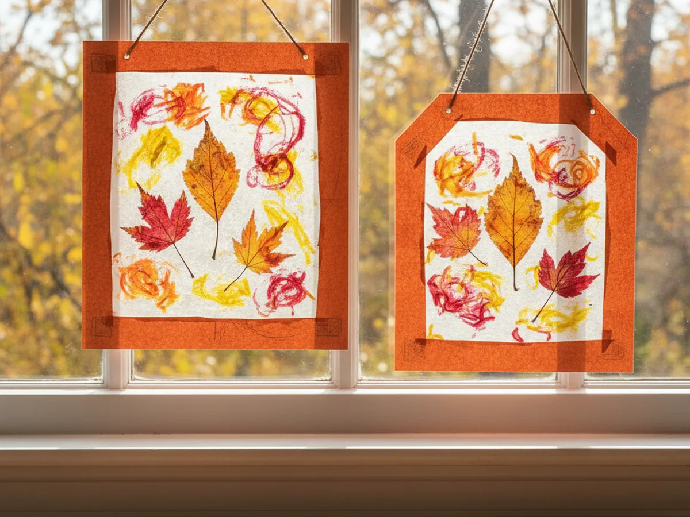
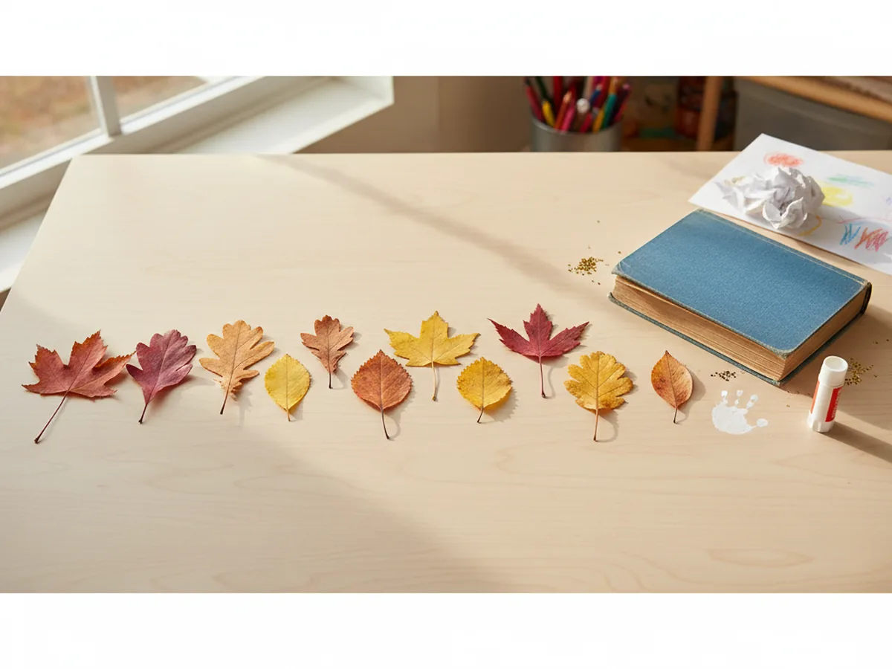
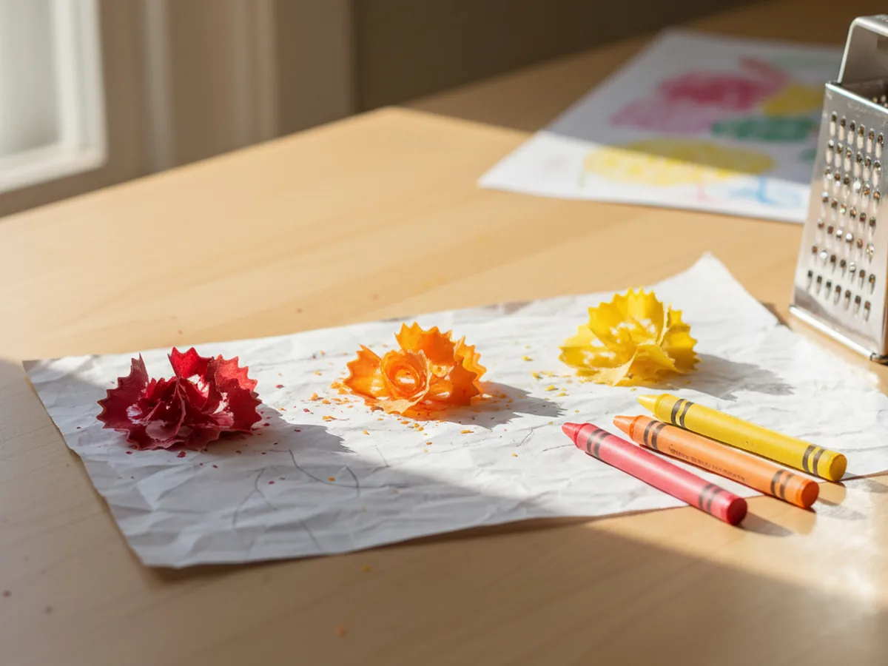
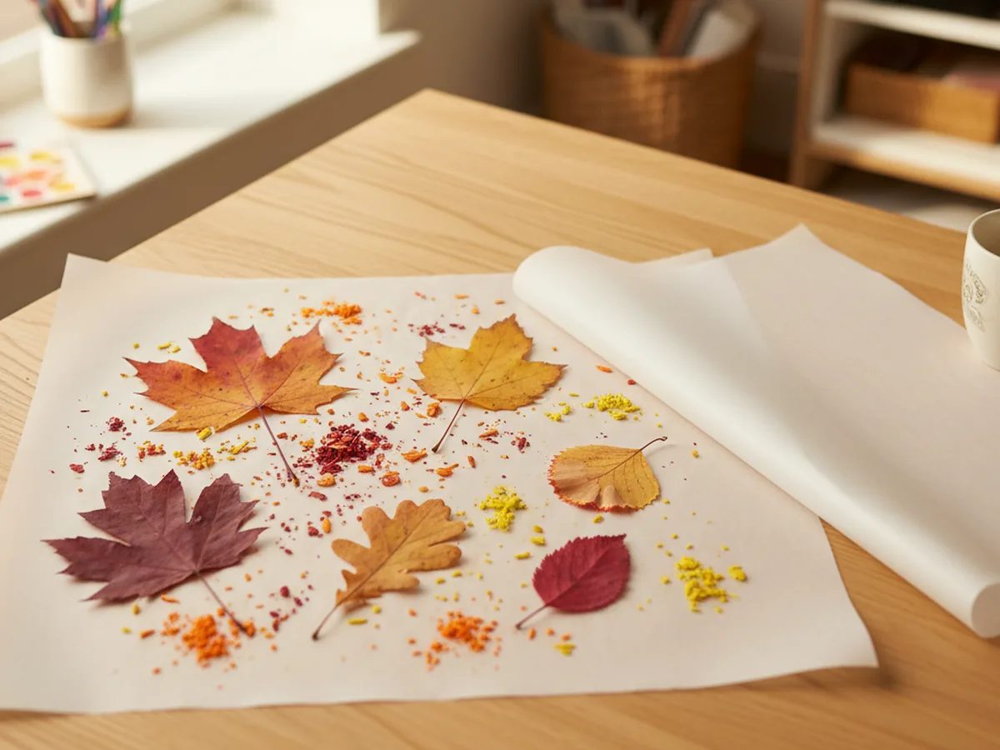
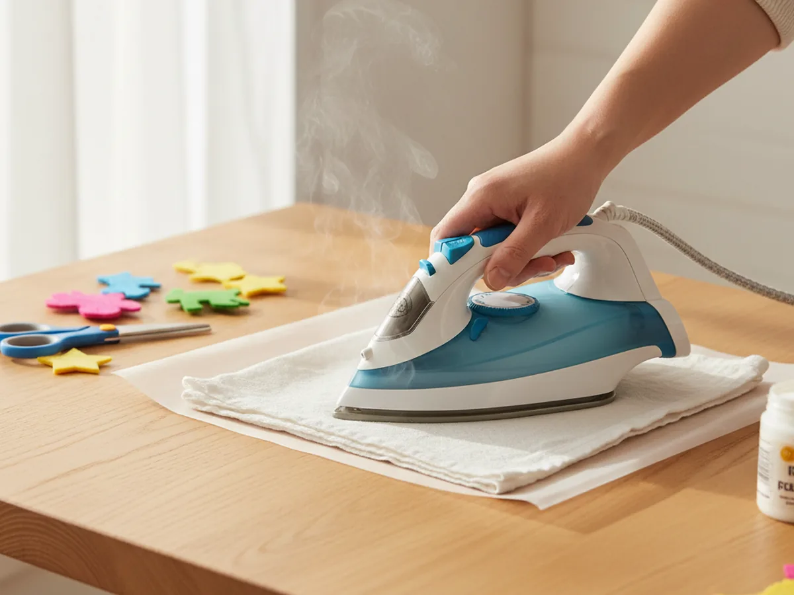
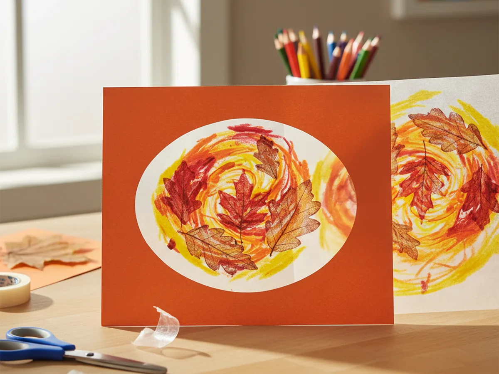
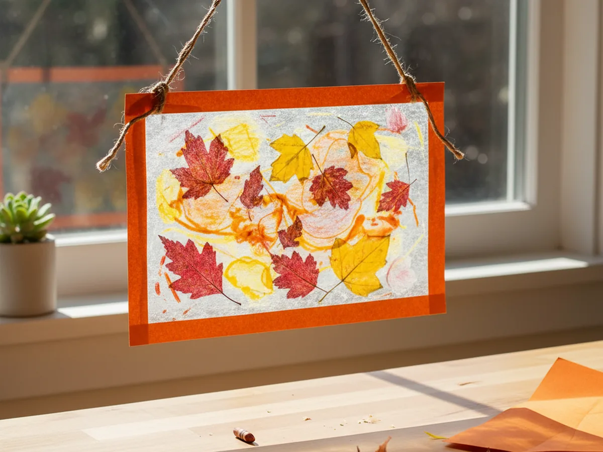

Some crafts are worth doing just for the moment you hang the finished piece in a window. This wax paper leaf craft is one of them. You press real fall leaves between two sheets of wax paper, melt crayon shavings around them with a warm iron, and end up with a glowing, stained-glass-style panel that looks like something from an art gallery when the sun shines through it.
The whole project takes about 45 minutes, works beautifully for kids ages 4 and up, and requires almost nothing to set up. Most families already have everything they need at home. It is the kind of wax paper leaf craft that feels special but is genuinely easy to pull off, even on a busy afternoon. 🍂
Why Kids Love This Craft
There is something deeply satisfying about finding your own materials outside. Collecting leaves together before starting the craft turns a simple project into a little adventure. Kids pay close attention to the shapes and colors of what they pick up, and that focused curiosity is lovely to watch.
Once you are back inside, the process of shaving crayons and sprinkling the bits onto the wax paper feels almost magical to young children. There is real sensory pleasure in handling the waxy flakes and arranging them around the leaves. Then when you iron the layers together and the shavings melt into soft pools of color, kids light up. The transformation happens right in front of their eyes, and that moment of surprise is genuinely delightful.
From a developmental standpoint, this wax paper leaf craft builds fine motor skills through the careful arrangement of small materials, and it sparks a natural curiosity about how heat changes things. The finished result is something your child can be genuinely proud of, especially once it is hanging in a sunny window and glowing with warm autumn colors.
What You'll Need
Here is everything you need for this wax paper leaf craft, all easy to find and simple to use.
- Wax paper, a standard roll is all you need for multiple suncatchers.
- Crayons, choose warm fall shades like red, orange, yellow, and brown for the best effect.
- Construction paper, for cutting the decorative frame around the finished panel.
- Single hole punch, for making a clean hanging hole at the top of the frame.
- Jute twine, for hanging the finished suncatcher in a window.
- Mini craft iron or a regular household iron, used by an adult to melt the crayon shavings.
- Real fall leaves, gathered from outside before you start.
- A vegetable grater or old pencil sharpener, for shaving the crayons.
- A thin cloth or old tea towel, to protect the wax paper while ironing.
- Scissors, for trimming and cutting the frame.
- Tape or a glue stick, for securing the wax paper panel inside the frame.
Step-by-Step Instructions
This craft comes together in six simple steps. Take your time with each one and enjoy the process alongside your child.
Step 1: Collect and Press Your Leaves
Head outside together and collect a small handful of fall leaves in different shapes and sizes. Look for ones that are relatively flat and not too thick. When you get back inside, press the leaves between the pages of a heavy book for at least 10 minutes before starting. This flattens any curled edges and helps the leaves sit smoothly on the wax paper, which makes the finished craft look much cleaner.

Step 2: Shave the Crayons
Peel the paper wrappers off several crayons in your chosen colors. Hold each crayon over a piece of scrap paper and rub it against a vegetable grater or run it through an old pencil sharpener to create thin shavings. You want a generous pile of loose crayon bits, not large chunks. Warm fall shades like red, orange, burnt orange, yellow, and golden brown will look stunning once they melt together around the leaves. Keep shavings from different colors separate for now so your child can scatter them intentionally.

Step 3: Arrange the Leaves and Crayon Shavings
Tear off a sheet of wax paper about 12 inches long and lay it flat on your craft table. Place your pressed leaves face-up across the wax paper, spacing them however looks good to you. Then let your child scatter the crayon shavings around and between the leaves. Encourage them to sprinkle the colors in layers and vary the placement. The shavings do not need to be perfectly even. Loose, organic sprinkling looks more beautiful once everything melts together. ✨

Step 4: Iron to Seal
This step is for adults only. Lay a second sheet of wax paper over the top of the leaf and crayon arrangement, sandwiching everything between the two layers. Place a thin cloth or old tea towel over the whole thing to protect the iron. Then press a warm iron gently but firmly over the cloth for about 20 to 30 seconds. You will feel and hear the wax paper softening slightly. When you lift the cloth and peek, you will see the crayon shavings have melted into soft, translucent pools of color around the preserved leaves. Let the panel cool completely before touching it.

Step 5: Cut the Construction Paper Frame
While the wax paper panel cools, cut a frame from a piece of construction paper. Fold the paper in half and cut a large rectangle or oval from the center, leaving about one inch of border all the way around. When you unfold it, you have a clean decorative frame. Slide the cooled wax paper leaf craft panel behind the frame so it shows through the opening. Trim any wax paper that extends beyond the outer edge of the frame, then tape or glue the edges of the panel to the back of the frame to hold it securely in place.

Step 6: Punch a Hole and Hang It Up
Use a hole punch to make a small hole near the top center of the construction paper frame. Thread a piece of jute twine through the hole and tie a secure knot. Now carry your finished wax paper leaf craft to your sunniest window and hang it up. When natural light shines through the melted crayon colors and the preserved leaf shapes, the result is genuinely beautiful. This is one of those crafts that stays in the window for weeks because nobody wants to take it down. 🍁

Variations to Try
Spring Flower Version: Skip the fall leaves and use pressed flowers or flower petals instead. Use light pink, lavender, and yellow crayon shavings around them for a soft spring palette. The technique is identical, and the results are just as striking in a window when the light catches the petals.
Monochrome Color Study: Instead of mixing multiple colors, choose just two or three shades that blend well together, like deep red and orange, or golden yellow and amber. The result is more graphic and cohesive, almost like a watercolor wash behind the leaves, and it works beautifully as a simple home decoration.
Mini Gift Tag Version: Make a very small panel using a 4-inch square of wax paper with just one small leaf and a pinch of shavings. After ironing, cut it into a small rectangle, add a simple card-sized frame, punch a hole, and tie on a ribbon. It makes a sweet handmade gift tag or window ornament that any grandparent would love.
Final Thoughts
A wax paper leaf craft is one of those rare projects that turns a short walk outside into a full afternoon of creative joy. From gathering the leaves to watching the crayon shavings melt, every step holds something interesting for a young child. The finished suncatcher is beautiful enough that most families display it for the whole season.
What makes this craft especially meaningful is how it starts outside. You are not just making something pretty together; you are noticing the world, collecting a tiny piece of it, and preserving it in a way that glows. That is a memory worth making with your child. 🎨
More Crafts You'll Love
If your child enjoyed this wax paper and nature craft, these two projects make a perfect follow-up.